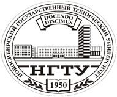

МИНИСТЕРСТВО НАУКИ И ВЫСШЕГО ОБРАЗОВАНИЯ РОССИЙСКОЙ ФЕДЕРАЦИИ
ФГБОУ ВО «НОВОСИБИРСКИЙ ГОСУДАРСТВЕННЫЙ ТЕХНИЧЕСКИЙ УНИВЕРСИТЕТ»
Факультет автоматики и вычислительной техники
Кафедра АСУ

ОТЧЁТ
по лабораторной работе №3
"Использование npm, webpack и REST API"
Дисциплина «WEB-программирование», 6 семестр
Преподаватель: Хворостов В. А.
Группа: АВТ-013
Студенты:
Климов Д.К.
Сергеев Г.Е.
г. Новосибирск
2023 год